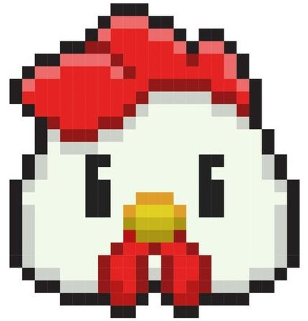

Coopmaster
Tato práce řeší problém neefektivního a časově náročného řízení chovu hospodářských zvířat, konkrétně kura domácího. V tradičním chovu je nutná častá fyzická přítomnost chovatelů, což může být náročné a časově limitující. Cílem práce je automatizace těchto procesů pomocí moderních technologií, jako je například zpracování obrazu pomocí neuronových sítí. Dále je součástí práce implementace kamerového systému a vlastních IoT zařízení. Výsledkem je zefektivnění monitorování stavu a aktivity zvířat, kontrola snůšky vajec a zajištění většího bezpečí hejna.
Implementace asistenčního systému pro automatizaci chovu kura domácího, využívající strojové učení a IoT prvků řízení, povede k optimalizaci monitorování a řízení chovného prostředí. Integrace platformy Home Assistant společně s mikroservisní architekturou zlepší reakční dobu na změny v chovném cyklu a zajistí škálovatelné řešení pro dlouhodobý provoz. Tento systém přispěje k efektivnímu řízení produkce a welfare zvířat, díky snížení nutnosti lidského zásahu.
1. Analýza řešení
Během analýzy jsem vycházel z dat, která jsem získal o podobných řešeních na internetu. Dále jsem bral v
potaz moje požadavky budoucího uživatele a výpovědi mojí babičky, která je zkušenou chovatelkou.
2. Návrh systému a určení technologií
Kvůli škálovatelnosti a rozšiřitelnosti jsem zvolil mikroservisní architekturu a jako programovací jazyk je
použit Python. Open source systém Home Assistant zajišťuje kvalitní uživatelské rozhraní. Arduino Nano tvoří
mozky všech IoT zařízení a IP kamery zajišťují data pro analýzu obrazu prováděnou modelem Yolo11 společnosti
Ultralytics.
3. Realizace, testování a instalace do kurníku
Bylo třeba zajistit internetové připojení, přívod elektrické energie, samotné zapojení a konfiguraci. Část
systému běží na Raspberry Pi 5 v kurníku a zajišťuje komunikaci s kamerami a IoT prvky. Druhá část
zajišťující běh neuronových sítí, uživatelské rozhraní a propagaci systému ven na internet, běží doma na
Intel NUC 11 Entusiast. Systém je již používán v ostrém provozu a i babička už si k němu našla cestu přes
mobilní aplikaci.
V budoucnu rozhodně plánuji dále zlepšovat přesnost rozpoznávacího algoritmu a přidat další rozšíření. Zajímavá funkce, která opět přinese užitečná statistická data, je tvorba statistik pro každou slepici zvlášť. Pravděpodobně se bude jednat o využití segmentace a následné rozeznávání jednotlivých slepic mezi sebou. Projekt obsahuje mnoho vědních oborů, a proto plánuji také jeho publikaci například v Home Assistant komunitě, což by mohlo podnítit zájem mnoha dalších nadšenců.
Výsledkem práce je systém, který hospodáři značně usnadňuje správu jeho chovu v reálném čase. Aplikace umožňuje vzdálenou kontrolu situace v kurníku a ve výběhu. Dále automaticky informuje o potenciálních hrozbách a kontroluje počet slepic pro následnou automatizaci. Systém poskytuje záběry z kamer a monitoruje stav hnízd, což umožňuje analyzovat chov pomocí statistik. Přestože detekce vetřelců za zhoršených světelných podmínek a přesnost rozpoznání počtu vajec stále vyžadují vylepšení, systém představuje významný krok vpřed v automatizaci chovu hospodářských zvířat.